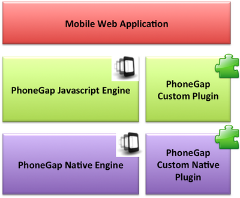
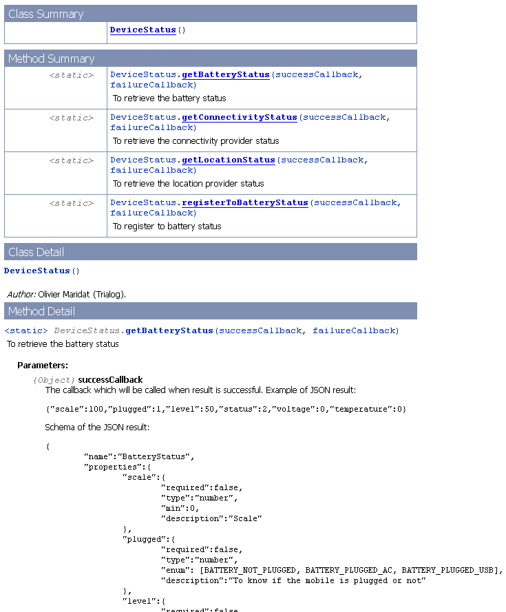

How to Create a PhoneGap Plugin¶
Plugin system¶
Overall Architecture¶
To enlarge web application possibilities, it may be useful to use native calls through Javascript. For example, to use a piece of complex Android code (Java code) easily in Javascript. This is possible using the PhoneGap plugin system.
The overall architecture is the following:
- a native component making the job, for example a Java Android file
- a HTML / CSS / Javascript GUI using this native component through Javascript calls
- a bridge between Javascript and the
native code to create the link. This bridge is composed of:
- one native file (i.e. one Java file),
- one Javascript file exposing this native component,
- and generally one quick configuration file specific to the platform.
The following illustration shows this overall architecture. Notice that PhoneGap is already providing plugins (PhoneGap Javascript Engine / PhoneGap Native Engine).

More About the Bridge between Javascript / Native Code¶
Let's take a simple example:
- In Java you have a method "String sayHello(String name)" which return "Hello <name>!"
- In Javascript, you want to call the method "sayHello(name, successCallback, failureCallback)" to use this Java method (if you are just the user of this Javascript method, you don't have to know that).
But PhoneGap is providing us:
- In the Java side: a method "PluginResult execute(String methodName, JSONArray arguments, String callbackId)"
- In the Javascript side: a method "PhoneGap.exec(successCallback, failureCallback, 'plugin name', 'method name', [parameters])"
The goal of the bridge is to use these methods provided by PhoneGap to hide the complexity and provide simple methods to the user. We will show how to learn that later in section "Quick Overview: How to Create a Plugin". Let's continue with principles around this bridge.
The main idea behind this bridge is to transform a Java method call into a formatted string. More precisely a JSON formatted string. JSON is a string format used very often in Web technologies and particularly with Javascript because it is so easy to manipulate this format in this language (it has been created for that). About JSON, see Tips to Manage the JSON Format (using Javascript, Java and Android). We are using the same idea in the Societies communication framework (using XML schemas) or to share services between Android Societies applications (using formatted string). Therefore:
- PhoneGap is managing the method call and the link between Java / Javascript with “execute” (Java side) and “PhoneGap.exec” (Javascript side)
- In our bridge, we only have to transform:
- Java side: our Java parameters into a JSON string, our return value(s) into a JSON string (or a normal string if we only have one simple value)
- Javascript side: almost nothing. Sometimes we will have to transform our parameters into a JSON array (which is more than easy) for convenience but that is all. The user of the method will manage normal parameters or JSON formatted parameters, and receive a JSON formatted value(s). This is the common way to work in Javascript.
Android PhoneGap Plugins¶
Quick Overview: How to Create a Plugin¶
To build a PhoneGap plugin, we have to create the bridge between Javascript and Java in order to provide usable methods for the user.
One Java file (org.packagename.MyJavaPhoneGapPlugin.java)
1 public class MyJavaPhoneGapPlugin extends Plugin { 2 @Override 3 public PluginResult execute(String methodName, JSONArray params, String callbackID) { 4 PluginResult result = null; 5 // –- Manage the relevant methode name 6 if (methodName.equals(“myMethodName”)) { 7 // Retrieve parameters from the JSON array 8 // Call the Java method and save the return value 9 // Refactor the return value as a String or a JSON object 10 result = new PluginResult(Status.OK, <Java call result>); 11 } 12 // -- Error: unknown methode name 13 else { 14 result = new PluginResult(Status.INVALID_ACTION); 15 } 16 return result; 17 } 18 }
One Javascript file (js/plugins/MyJSPhoneGapPlugin.js)
1 // -- Create the class
2 var MyJSPhoneGapPlugin = {
3 // -- Create methods
4 myMethodName: function(parameter, successCallback, failureCallback) {
5 return PhoneGap.exec(
6 successCallback, //Success callback
7 failureCallback, //Failure callback
8 'PluginName', //Plugin name (defined in PhoneGap configuration)
9 'myMethodName', //Method to call in this plugin
10 [parameter]); //List of arguments of the call
11 },
12 myOtherMethodName: function(parameter, successCallback, failureCallback) {
13 return PhoneGap.exec(
14 successCallback,
15 failureCallback,
16 'PluginName',
17 'myOtherMethodName',
18 [parameter]);
19 }
20 // ...
21 };
22
23 // –- Add this plugin to PhoneGap plugin system
24 PhoneGap.addConstructor(function() {
25 PhoneGap.addPlugin("MyPluginName", MyJSPhoneGapPlugin);
26 });
One configuration file (xml/plugins.xml)
1 <plugin name="PluginName" value="org.packagename.MyJavaPhoneGapPlugin" />
How to use this plugin in Javascript (e.g. index.html)
This is finished! Let's use it! We are in a HTML file of the GUI.
1 <script src="js/plugin/MyJSPhoneGapPlugin.js"></script> 2 <script> 3 document.addEventListener('deviceready', function() { 4 window.plugins.MyPluginName.myMethodName(“my parameter”, onSuccess, onFailure); 5 }); 6 7 function onSuccess(data) { 8 console.log(data); 9 } 10 function onFailure(e) { 11 console.log(e); 12 } 13 </script>
Create a Simple PhoneGap Plugin¶
Simple PhoneGap plugin means: synchronous Java calls using simple parameters (int, string, list, …).
A “HelloWorld” plugin example is available on Github: platform-infrastructure/client-frwk/PhonegapPluginExemple
See the Android PhoneGap Plugins Creation / Installation official tutorial to learn more about creation of a PhoneGap plugin.
Create a PhoneGap Plugin Using Complex Parameters¶
PhoneGap plugin using complex parameters means: synchronous Java calls using simple parameters (int, string, list, …) or Java object parameters.
Java objects have to be transformed into JSON strings by the bridge in order to be passed to the Javascript method. This mean that this Java object is relatively simple, without any logic in it. Like a bean. Anyway, this logic will not appear in the JSON string. The more this Java object is simple, the more this step can be done automatically. Very complex Java object may need manual actions to create the bridge.
A DeviceStatus plugin is available on Github to show the usage of complex parameters. Show especially the Android Plugin DeviceStatusSimpleJavaCallPlugin
Create a PhoneGap Plugin Using Asynchronous Call on Java Side¶
In our previous examples, on Javascript side, calls are asynchronous. This is a common practice in Javascript and a good one in this case because we are going to use Android native methods for relatively heavy computation.
In Java side, we will manage both approach: synchronous and asynchronous calls. Synchronous are already manage by previous paragraphs. Let's see how to manage asynchronous calls.
- In your execute() method of your plugin save the callbackID.
- Return a NO_RESULT plugin result and set keep callback id to true.
PluginResult pluginResult = new PluginResult(Status.NO_RESULT); pluginResult.setKeepCallback(true); return pluginResult;
- When your asynchronous Java method finishes return another plugin result like this:
PluginResult result = new PluginResult(Status.OK, data); result.setKeepCallback(false); this.success(result, this.savedCallbackID); // OR this.error(errorResult, this.savedCallbackID);
A DeviceStatus plugin is available on Github to show the usage of asynchronous Java calls.
Create a PhoneGap Plugin Using Android Service on the Java Side¶
It is also possible to use Android services (bound service or
started service) on PhoneGap plugins. A DeviceStatus plugin is available on Github
to show the usage such services.
This is similar to a
simple Java call, but the connection with the service has to be
done before the execution of the "execute" method. Therefore, to
use an Android Service, you will have to use the method
"onResume", which is always called before the execution in the
Android environment. Unfortunately, the "Plugin" class seems to
have a bug with the "onResume" method. So, to summarize, in
future versions of PhoneGap, we may launch our service in the
"onResume" method like bellow:
1 @Override 2 public void onResume(boolean arg) { 3 Log.d("MyPlugin", "Plugin resumed"); 4 // Link to the Android service 5 if (!serviceConnected) { 6 Intent serviceIntent = new Intent(this.ctx, AndroidServiceClass.class); 7 this.ctx.bindService(serviceIntent , new ServiceConnection() { ... }, Context.BIND_AUTO_CREATE); 8 } 9 }
But, at the moment, we have to launch the service in the "execute" method, and to launch our real computation when the Android service is launched. See the example bellow:
1 @Override 2 public PluginResult execute(String methodName, JSONArray params, String callbackID) { 3 // Inform the JS side: async mode 4 PluginResult result = new PluginResult(Status.NO_RESULT); 5 result.setKeepCallback(true); 6 this.methodName = methodName; 7 this.arguments = arguments; 8 this.callbackID = callbackID; 9 // Launch the Android service 10 Intent deviceStatusIntent = new Intent(this.ctx, DeviceStatusServiceDifferentProcess.class); 11 this.ctx.bindService(deviceStatusIntent, deviceStatusServiceConnection, Context.BIND_AUTO_CREATE); 12 return result; 13 } 14 15 private ServiceConnection deviceStatusServiceConnection = new ServiceConnection() 16 { 17 public void onServiceDisconnected(ComponentName name) 18 { 19 deviceStatusServiceConnected = false; 20 } 21 public void onServiceConnected(ComponentName name, IBinder service) 22 { 23 deviceStatusService = new Messenger(service); 24 deviceStatusServiceConnected = true; 25 onPluginReady(methodName, arguments, callbackID); 26 } 27 }; 28 29 public PluginResult onPluginReady(String methodName, JSONArray arguments, String callbackID) 30 { 31 Log.d(this.getClass().getSimpleName(), "Plugin Called"); 32 // Real computation ... 33 }
How to Share the Javascript API¶
The creator and the user of the PhoneGap plugin may not be the same person. Furthermore, Javascript doesn't have something like "Interface". Therefore, a process is needed to share the Javascript API in order to help the user of the plugin (the GUI developer for example), to use it.Two quick steps are needed:
- The developer of the plugin have to
comment his Javascript plugin file using the Javadoc / Doxygen
/ JSDoc syntax.
For the documentation of the return values, please provide: one
example of JSON result, and the JSON schema
of this result. The first one is only an example easy to
understand, and the second one give the exact information.
The JSDoc syntax has some features (like @class, @constructor), for more information, please read: The JSDoc Wiki page, the JSDoc programming guider.
Example with the DeviceStatus plugin:
/** * @author Olivier Maridat (Trialog) * @version 1.0 * @class * @constructor */ var DeviceStatus = { /** * To retrieve the connectivity provider status * * @param {Object} successCallback The callback which will be called when result is successful. * Example of JSON result: * <pre> * {"isInternetEnabled":true, "providerList":[{"name":"WiFi", "enabled":true}, {"name":"mobile mms", "enabled":false}]} * </pre> * Schema of the JSON result: * <pre> * { * "name":"ConnectivityProviderStatus", * "properties":{ * "isInternetEnabled":{ * "required":true, * "type":"boolean", * "description":"To know if Internet is available or not" * }, * "providerList":{ * "required":false, * "type":"array", * "description":"List of connectivity providers", * "items":{ * "name":{ * "required":true, * "type":"string", * "description":"Name of the connectivity provider" * }, * "enabled":{ * "required":true, * "type":"boolean", * "description":"To know if this provider is available or not" * } * } * } * } * } * </pre> * @param {Object} failureCallback The callback which will be called when result encounters an error. (String result) */ getConnectivityStatus: function(successCallback, failureCallback){ var parameters = null; return PhoneGap.exec( successCallback, failureCallback, 'DeviceStatus', 'getConnectivityStatus', [parameters]); } // ... }; - The developer of the plugin have to
generate the Javascript documentation of his plugin using "mvn
site". The documentation will be available on the target/doc
folder.
To do that, the POM of the project had to be configured using the JSDoc Maven plugin:
<pluginRepositories> <pluginRepository> <id>jsdoctk2</id> <url>http://jsdoctk-plugin.googlecode.com/svn/repo</url> </pluginRepository> </pluginRepositories> <build> <plugins> <!-- ... --> <plugin> <groupId>nl.windgazer</groupId> <artifactId>jsdoctk-plugin</artifactId> <version>2.3.2</version> <executions> <execution> <phase>site</phase> <goals> <goal>jsdoc</goal> </goals> </execution> </executions> <configuration> <!-- The generated documentation will be put on this directory --> <directory>${project.build.directory}/doc</directory> <!-- JS file(s) of this directory will be used to generate the documentation --> <srcDir>${basedir}/assets/www/js/plugin</srcDir> </configuration> </plugin> </plugins> </build>
The generated documentation will look like:
